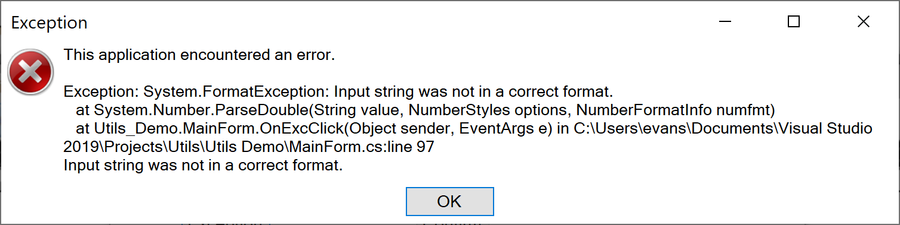
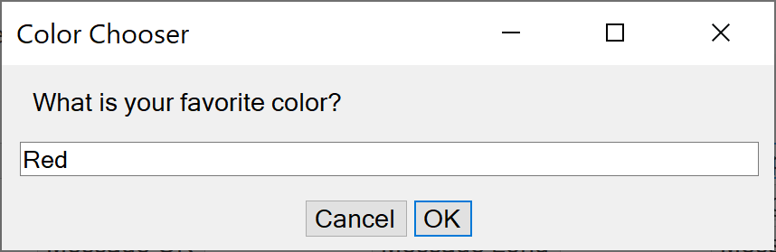

Utils Overview Utils Overview
Utils Overview Utils OverviewThe main purpose of Utils is to supply a C# class library of several utilities that may be useful in Windows Forms applications. These include info, warning, error, and exception dialogs, and a C# replacement for MessageBox, which is a native application. These utilities are described below. The class library has versions for .NET 5 and for .NET Framework 4.7. Utils.dll is found in one of the bin/Release directories. Use the version appropriate to the Target Framework you are using in your application by adding it as a reference for your project. The utilities are described below.
There is also an application, Utils Demo, to demonstrate some of the utilities and let you see how they work.
This is a screen shot of the Utils Demo interface. There are buttons to demonstrate and test the various utilities.

This class primarily provides error handling by bringing up an appropriate dialog.
It includes:
This is the exception dialog. The others are similar.

As of Version 2.1.0.0 of Utils, the ScrolledHTMLDialog is using Microsoft's WebView2, which does not depend on old Internet Explorer technology (no longer supported on some web sites). However you now need to to add the NuGet Microsoft.Web.WebView2 package to your project if you use ScrolledHTMLDialog.
This is a class that provides an Input dialog. You can choose the dialog title, the prompt, and optionally the initial value. The value is returned as a string.

Usage example:
string msg = "What is your favorite color?";
InputDialog dlg = new InputDialog("Color Chooser", msg, "Red");
DialogResult res = dlg.ShowDialog();
if (res == DialogResult.OK) {
string val = dlg.Value;
if (val != null) {
Utils.infoMsg("Your favorite color is " + val);
}
}
This is a class that provides an About dialog. It has an image and is designed to use information such as ProductName, Version, Copyright, CompanyName, and Description from the Assembly.

Usage example:
Assembly assembly = Assembly.GetExecutingAssembly();
Image image = null;
try {
image = Image.FromFile(@".\Help\UtilsDemo.256x256.png");
} catch (Exception ex) {
Utils.excMsg("Failed to get AboutBox image", ex);
}
AboutBox dlg = new AboutBox(image, assembly);
dlg.ShowDialog();
This is a dialog that displays scrolled text. It has Clear, Cancel, and Ok buttons. It can be used as both modal and modeless.
Modless Example
private static ScrolledTextDialog scrolledText;
DateTime now = new DateTime();
if (scrolledText == null) {
scrolledText = new ScrolledTextDialog(
Utils.getDpiAdjustedSize(this, new Size(400, 400)),
"Start of Scrolled Text");
scrolledText.appendTextAndNL("OnScrolledTextClick (First Time)" + now);
}
scrolledText.ButtonCancel.Visible = false;
scrolledText.appendTextAndNL(NL + "OnScrolledTextClick " + now);
scrolledText.Visible = true;
Modal Example
string msg = "Some information;
ScrolledTextDialog dlg = new ScrolledTextDialog(
Utils.getDpiAdjustedSize(this, new Size(400, 400)),
"Example Scrolled Text");
dlg.appendText(msg);
DialogResult res = dlg.ShowDialog();
if (res == DialogResult.OK) {
Utils.infoMsg("You clicked OK");
} else if (res == DialogResult.Cancel) {
Utils.infoMsg("You clicked Cancel");
}
This is a dialog that displays an HTML web page as would be used for an Overview item on the Help menu. The dialog is a simple web browser with Back and Forward buttons. It can follow links. As of Version 2.1.0.0 of Utils, you must include the NuGet package Microsoft.Web.WebView2.
Usage Example
It is assumed there is a folder named Help in the bin directory which has files Overview.html as well as images, CSS, and other items as needed by Overview.html.
private static ScrolledHTMLDialog overviewDlg;
if (overviewDlg == null) {
MainForm app = (MainForm)FindForm().FindForm();
Utils.getDpiAdjustedSize(app, new Size(800, 600)),
"Overview", @"Help\Overview.html");
overviewDlg.Show();
} else {
overviewDlg.Visible = true;
}
This is a class that duplicates much of what MessageBox does. It is based on FlexibleMessageBox, see Acknowledgements.
Features:It has a context menu for Copy unlike MessageBox, and Copy only copies the text, not what Ctrl-C does in MessageBox.. It does not center on the screen as does MessageBox, and the layout and default font are a little different from MessageBox.
There are static fields for FONT, MAX_WIDTH_FACTOR, and MAX_HEIGHT_Factor that can be used to override the defaults.
Usage examples:
MessageDialog.Show("Some text");
MessageDialog.Show("Some text", "A caption");
MessageDialog.Show("Some text with a link: www.google.com",
"Some caption",
MessageBoxButtons.AbortRetryIgnore,
MessageBoxIcon.Information,
MessageBoxDefaultButton.Button2);
var dialogResult = MessageDialog.Show(
"Do you know the answer to life the universe and everything?",
"One short question", MessageBoxButtons.YesNo);
Much of the code for MessageDialog was based on what was done for FlexibleMessageBox.
Author: Jörg Reichert(public @jreichert.de)
Contributors: Thanks to: David Hall, Roink
Version: 1.3
Published at: http://www.codeproject.com/Articles/601900/FlexibleMessageBox
MessageDialog is a different implementation from FlexibleMessageBox. The interface is a little more different from MessageBox than FlexibleMessageBox is, and there is a context menu. There is currently no support for other languages as with FlexibleMessageBox. Some issues with FlexibleMessageBox have been fixed. These include